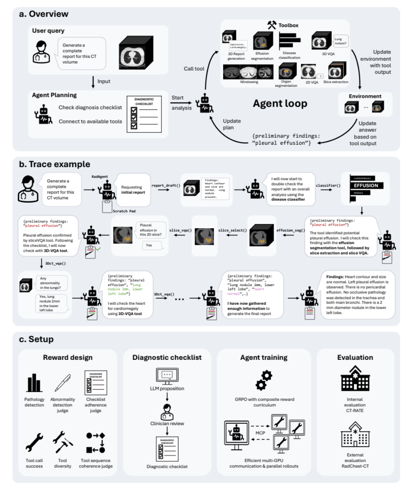

RadAgent
RadAgent: A tool-using AI agent for stepwise interpretation of chest computed tomography
胸部 CT · 放射学 AI Agentv1 (最新 v2, 2026-06-01)代码已公开 GitHub，模型权重已发布 HuggingFace（radagent-qwen3-14b-lora）。工具箱使用的模型均为开源（CT-Chat、CT-CLIP、TotalSegmentator、Gemma-3-27b），基于 MCP 协议通信。
| 基础信息 | 首个基于强化学习训练的胸部 CT 报告生成 Agent，通过可检查的中间推理轨迹将 3D VLM 报告生成黑盒过程透明化。 |
|---|---|
| 数据集 | CT-RATE（25,692 例非增强胸部 CT，21,304 名患者，单中心；包含训练/验证/测试集）+ RadChestCT（36,316 例，Duke 大学；公开 3,632 例作为外部测试集） |
| 方法学 | Qwen3-14B 作为 Agent 策略核心，基于 ReAct 模式，使用 GRPO 强化学习训练工具调用策略；配备 10 个专用工具（3D/2D VQA、疾病分类、报告生成、解剖分割、积液分割、切片选择×3、CT 窗位）；通过诊断检查清单（9 大类）引导逐步推理；工具通过 MCP 协议跨多 GPU 节点通信。 |
| 开源 | 代码已公开 GitHub，模型权重已发布 HuggingFace（radagent-qwen3-14b-lora）。工具箱使用的模型均为开源（CT-Chat、CT-CLIP、TotalSegmentator、Gemma-3-27b），基于 MCP 协议通信。 |

RadAgent 算法流程全景图CT Report Generation Pipeline
INPUT
🫁
3D CT Volume
NIfTI 格式 · 非增强胸部 CT
💬
User Query
"Generate a complete report for this CT volume"
▼
DRAFT
R
report_generation_tool (:7006)
CT-Chat 2 生成初始报告草稿
Step 0
▼
🔄 Agent Loop (ReAct Pattern · 最大 30 轮)
Qwen3-14B-Instruct · temperature=1.0 · max 4096 t/turn
CHECKLIST 诊断检查清单 (9 类)
1. 气道 · 气管/支气管/扩张
2. 肺实质 · 结节/肿块/GGO
3. 胸膜 · 积液/气胸/增厚
4. 心血管 · 心包/主动脉
5. 膈肌 · 肝/脾/肾/胰腺
6. 脊柱 · 骨折/病变/狭窄
7. 胸壁 · 肌肉/肿块/气肿
8. 乳腺腋窝 · 淋巴结
9. 器械 · 导管/起搏器
🧠 Plan
→
🔧 Call Tool
→
📝 Update
每轮输出 JSON:
{reasoning, preliminary_findings, action, tool_name, arguments}
Scratchpad:
preliminary_findings 证据共识池 · 跨工具交叉验证 · 矛盾消解
证据充分 →
final_answer
证据不足 → 继续循环
SELECT 工具选择
🔍 ct_vqa — 3D 问答
🖼️ slice_vqa — 2D 问答
🏷️ classifier — 疾病分类
✂️ segmentation — 分割
📐 slice_select — 切片
🪟 windowing — 窗位
MCP GRID RadAgent Toolbox · 13 FastMCP HTTP Services
ct_vqa
CT-Chat · 3D VQA
:6009 · GPU 1,2
slice_vqa
Gemini/GPT-4O · 2D
:7016 · GPU 0,1
classifier
CT-CLIP · 18 病变
:7010 · GPU 2
report_gen
CT-Chat · 草稿
:7006 · GPU 0
seg_anatomy
TotalSegmentator
:7011 · GPU 2
seg_effusion
胸膜/心包积液
:7012 · GPU 2
slice_biggest
最大面积切面
:7014 · GPU 0
slice_multi
等距多切片 (3)
:7018 · GPU 0
slice_extract
均匀提取 (5)
:7017 · GPU 0
windowing
肺/骨/腹/纵隔
:7013 · GPU 0
▼
🎯 GRPO 训练 · Composite Reward
LLM Judge F1λ = 1.0
Text Classifier F1λ = 1.0
Tool Diversity + Coherenceλ = 0.5
Tool Success Rateλ = 0.1
KL Divergence Regularizationβ = 0.01
batch_size=6 · 8 rollouts/group · ART+TRL GRPOTrainer
📊 最终报告 & 评估
macro-F1
CT-RATE Test: +6.0 (+36.4%)
micro-F1
CT-RATE Test: +5.4 (+19.6%)
Robust
对抗鲁棒性 83.7% vs CT-Chat 58.9%
Faith
忠实性 37.0% vs CT-Chat 0.0%（全新能力）
External: RadChestCT · 95% bootstrap CI · 双侧置换检验
DEPLOY
Node 1:
Qwen3-14B Agent
Node 2 (4 GPU):
13 MCP Tool Services
|
MultiServerManager · 心跳检测 · 训练后可精简
🎯 R = λ₁·F1_LLM + λ₂·F1_RadBERT + λ₃·ToolDiversity + λ₄·ToolSuccess + λ₅·TrajectoryJudge − β·KL(π||π_ref)
🛡️ 对抗鲁棒性: P(ŷ_wrong = y* | ŷ_orig = y*) = 83.7% (CT-Chat: 58.9%, +24.7 pts) — hint injection 实验
🔍 Faithfulness: 37.0% — CT-Chat 为 0.0%，首次实现报告生成忠实性量化
方法要点：RadAgent 通过可检查的中间推理轨迹，将 CT 报告生成从不可解释的黑盒转变为透明过程。临床医生可直接审视每一步工具调用和证据来源，验证或修正发现。这为人机协作创造了新可能——临床医生可在 Agent 环境中直接调取分割结果、可视化阳性发现，形成人机闭环工作流。
数据集细节
- CT-RATE：25,692 非增强胸部 CT，21,304 名患者，单中心，含 18 种病理标签及文本分类器
- 训练/验证/测试切分：官方训练集 + 自留 1,000 例验证集 + 官方测试集
- RadChestCT：36,316 例，Duke 大学医学中心，36 类异常标签 + 52 类解剖位置标签
- 外部测试：使用 RadChestCT 公开子集（3,632 例，原数据集 10%）
- 病灶标签：CT-RATE 提供 18 类病理多标签 + 自定义文本分类器（macro/micro-F1 标准评估）
方法学细节
- Agent 策略模型：Qwen3-14B-Instruct (OpenPipe)，temperature=1.0，max 4096 tokens/turn
- Agent 变体：V8c（主模型，preliminary_findings 共识）> V8b（无共识字段消融）> V8minus（少工具消融）> Vanilla（无 Agent 基线）
- 训练框架：ART (~openpipe/art) + TRL GRPOTrainer，batch_size=6，每场景 8 次 rollout
- 复合奖励权重：LLM Judge F1 λ=1.0，Text Classifier F1 λ=1.0，Manual Tool Judge λ=0.5，Tool Success λ=0.1，KL 正则 β=0.01
- 服务架构：13 个独立 FastMCP HTTP 服务（端口 6009-8012），通过 MultiServerManager 统一管理 + 心跳检测
- Agent 循环：每轮输出 JSON {reasoning, preliminary_findings, action, tool_name, arguments}，最大 30 轮
- 推理部署：8 GPU 双节点；训练后可关闭不常用工具以降低计算开销
验证结果细节
- CT-RATE 验证集：macro-F1 显著优于 CT-Chat 基线
- CT-RATE 测试集：macro-F1 +6.0 点（+36.4% 相对），micro-F1 +5.4 点（+19.6% 相对）
- RadChestCT 外部测试集：泛化性能显著优于 CT-Chat（训练后优于训练无关版本）
- 鲁棒性实验（1,000 例 hint injection）：83.7% vs CT-Chat 58.9%（+24.7 点，+41.9% 相对）
- 忠实性实验：RadAgent 37.0% vs CT-Chat 0.0% — Agent 中间追踪可区分证据驱动与提示驱动
- 消融实验：无序列奖励导致策略崩溃；从头序列奖励损害报告质量与探索
RadAgent 论文概括总结
RadAgent 是首个基于强化学习训练的胸部 CT 报告生成 AI Agent。它不依赖手工设计的固定流程或提示工程，而是通过 GRPO 自动学习最优工具调用策略。其核心创新在于：将 3D VLM 的单步黑盒报告生成，转变为包含中间证据链的透明多步推理过程。在临床准确性、对抗鲁棒性和输出忠实性三个维度，RadAgent 全面超越其基础 VLM（CT-Chat），尤其是在忠实性上实现了从无到有的突破。
研究定位解决 3D VLM 在 CT 报告生成中缺乏可解释推理轨迹的问题，构建可追溯、可验证的 Agent 系统。
技术贡献提出 RL 训练的 Agent 框架（Qwen3-14B + GRPO + 复合奖励），整合 10 个专用 CT 分析工具、诊断检查清单和 MCP 通信协议，自动学习有效工具调用策略。
验证体系CT-RATE 内外测试集 + RadChestCT 外部泛化验证 + hint injection 鲁棒性/忠实性实验 + 消融实验验证复合奖励设计必要性。使用 95% bootstrap 置信区间和双侧置换检验。
临床意义中间推理追踪使临床医生能够审视每个诊断决策的证据基础。可扩展为人在回路工作流：Agent 先出报告，医生直接调取分割结果验证发现。